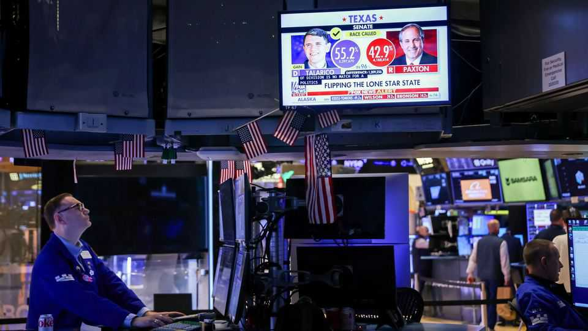
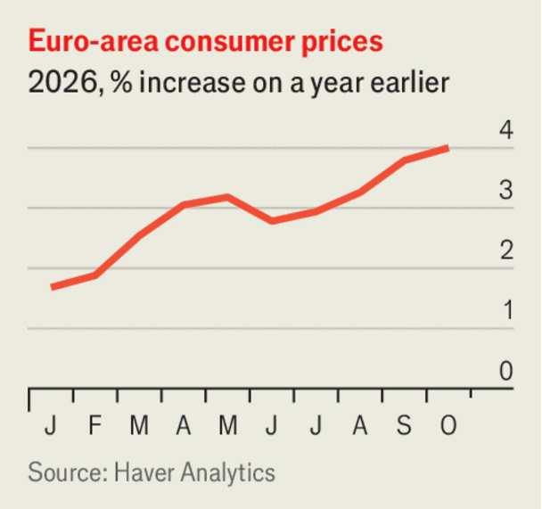

Business

Nov 5th 2026
American stock markets rose a little following the Democrats’ landslide victory in the midterms. The S&P 500, an index of big American companies, rose by 1.6% the day after the vote, while the tech-heavy NASDAQ rose by nearly 1.5%. Health-care and renewable-energy stocks rallied. Bond yields fell slightly and the dollar weakened.
Some artificial-intelligence stocks fell amid worries that local Democratic lawmakers could curtail the construction of data centres. Share prices of Nvidia, the world’s most valuable chipmaker, fell by more than 3%. Those of CoreWeave, a data-centre operator, fell by around 10%. Companies owned by Elon Musk, a big Republican Party donor, took a beating. Shares in SpaceX, his rocketry-cum-AI firm, fell by nearly 4%.
Brent crude, the global oil-price benchmark, fell by 8% to around $95 a barrel—its lowest level since September. Prices had risen in recent weeks over fears that Donald Trump might resume the war with Iran, causing fresh disruption to oil supplies from the Gulf. But after the Republicans’ poor showing in the midterms, traders are betting that the president may be reluctant to restart the unpopular war.
Anthropic committed to spending $895bn on AI infrastructure and computing power, according to a regulatory filing ahead of its planned IPO. The model-maker reported revenues of almost $17bn in the third quarter, up from $1.4bn in the same period a year ago. But computing costs led to operating losses of $567m. Its IPO will be one of the largest ever.
Apple reported its first quarterly results since John Ternus, its new boss, took over in September. The tech giant’s revenue reached $114bn, an increase of 12% year on year. But Mr Ternus warned of a sharp rise in the cost of memory chips, which would squeeze its margins. Shares in the firm briefly fell.
Hackers stole some $6.3bn-worth of tokens from Binance, the world’s largest cryptocurrency exchange. The firm worked with other companies to freeze $3bn-worth of crypto. It promised to cover all losses. TRM Labs, a blockchain-intelligence company, said it suspected that North Korean hackers were responsible. Bitcoin fell by around 5% following the attack, though it has since recovered to its earlier level of around $80,000.

Inflation in the euro zone rose to 4% year on year in October, the highest level since 2023. Energy prices, which have been pushed higher by the war in the Middle East, rose by nearly 21%, driving the increase. Core inflation, which excludes energy and food, was 2.5%. The European Central Bank is now expected to raise its main interest rate by a quarter of a percentage point, to 2.75%, in December.
America’s economy grew at an annualised rate of 3.4% in the third quarter, the fastest expansion in a year and above economists’ predictions. The personal-consumption-expenditures price index, the Federal Reserve’s preferred measure of inflation, came in at 3.6% year on year in September.
South Korea’s exports reached $115bn in October, up 94% from a year earlier. Semiconductors performed especially well, as AI firms gobbled up the memory chips produced by Samsung Electronics and SK Hynix. South Korea has exported $930bn-worth of goods in 2026 so far, putting it within reach of $1trn for a single year.
Chinese stocks found a floor this week after entering a bear market in October. The country’s market regulators announced a rescue plan to support stock buybacks and help investors access collateral for equity purchases. Officials have also quietly paused initial public offerings. China’s markets have been a global outlier this year. The CSI 300 is down by 13%, while most other markets have risen.
Saudi Aramco, the world’s biggest oil company, reported profits of $31.2bn in the third quarter, up 9% from a year earlier. High oil prices caused by the Iran war have created a windfall for oil firms. Saudi Arabia’s state oil concern has been more exposed than many. Attacks on shipping in the Strait of Hormuz have disrupted its exports and Yemeni rebels have bombed its facilities. But last month the firm managed to supply around 7m barrels of oil a day, roughly the same as before the war.
Fox News revealed that viewership had fallen by 27% ahead of the midterms. Last October an average of 2.3m people tuned in to the news channel during prime time. This year 1.7m did. Lachlan Murdoch, the cable-television network’s boss, blamed “viewer fatigue”. Mr Trump said Fox owed its poor ratings to “spending too much time covering the Trump Deranged Dumocrats”.